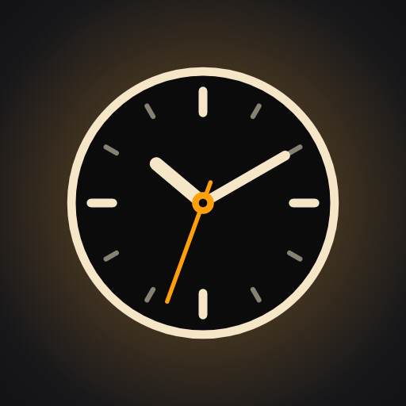

StandByGoogle Play'de StandBy (com.standby.app) adıyla yayımlanan Android uygulaması için geçerlidir.
StandBy hesap açtırmaz, analiz ya da takip aracı içermez ve kişisel verilerinizi bize ait bir sunucuya göndermez. Uygulama ücretsizdir; yalnızca Ayarlar ekranında Google AdMob reklamları gösterir — saat ekranında ve kilit ekranında asla reklam yoktur. İsteğe bağlı aylık Premium abonelikle reklamlar kalkar. Bildirimleriniz, müzik bilginiz ve fotoğraflarınız yalnızca telefonunuzun içinde, ekranda göstermek için işlenir. İnternete yalnızca harita özelliğini kullandığınızda, aşağıda listelenen açık kaynak harita ve rota hizmetleri için bağlanılır.
StandBy bağımsız bir geliştirici tarafından yapılmıştır. Gizlilikle ilgili her konuda yigit1903ask@gmail.com adresinden ulaşabilirsiniz.
| Bildirimler | Yalnızca Bildirim erişimi iznini verirseniz, gelen bildirimlerin uygulama adı, başlığı ve metni StandBy'ın Panel ekranında göstermek için telefonun içinde okunur. Hiçbir yere gönderilmez, kaydedilmez. Panel'den bir bildirimi sildiğinizde telefonunuzdan da silinir. İçeriği gizleyebilir, uygulama bazında filtreleyebilir ve izni istediğiniz zaman kapatabilirsiniz. |
|---|---|
| Müzik bilgisi | Aynı izinle, o an çalan şarkının adı, sanatçısı ve kapağı müzik kartında gösterilir; oynat/duraklat ve ileri/geri komutları müzik uygulamanıza iletilir. |
| Fotoğraflar | Yalnızca sizin seçtiğiniz fotoğraflar, slayt gösterisinde göstermek için telefonda açılır. Uygulama galerinizin geri kalanına erişmez. |
| Konum | Yalnızca harita açıkken; konumunuzu haritada göstermek, kamerayı sürüşe göre takip ettirmek ve rota ilerlemesini hesaplamak için kullanılır. Arka planda konum toplanmaz, konum geçmişi tutulmaz. |
| Şarj ve bağlantı durumu | Pil seviyesi, şarj türü (kablosuz/kablolu), Wi-Fi, Bluetooth ve mobil veri açık/kapalı durumu yalnızca ekranda göstermek ve StandBy'ı otomatik başlatmak için okunur. |
| Ayarlar ve son hedefler | Tercihleriniz ve aradığınız son hedefler telefonda saklanır. Ayarlar › Gizlilik bölümünden son hedefleri temizleyebilirsiniz. |
Uygulama rehber, arama kaydı, mesaj, dosya listesi ya da kişisel kimlik bilgisi toplamaz; analiz (analytics) ve çökme raporlama kütüphanesi içermez. Reklam kimliği yalnızca aşağıdaki 4. bölümde anlatılan reklamlar için Google AdMob tarafından kullanılır.
| Harita görüntüleri | Harita karoları OpenFreeMap sunucularından indirilir. Her internet isteğinde olduğu gibi sunucu IP adresinizi ve görüntülenen harita bölgesini görebilir. |
|---|---|
| Rota hesaplama | Rota başlattığınızda başlangıç ve hedef koordinatları OpenStreetMap topluluğunun ücretsiz rota sunucusuna (routing.openstreetmap.de; yanıt alınamazsa router.project-osrm.org) gönderilir. Ayarlardan kendi rota sunucunuzu tanımlayabilirsiniz. |
| Hedef arama | Aradığınız metin önce telefonunuzun adres arama hizmetine (çoğu telefonda Google) iletilir; sonuç bulunamazsa Photon (komoot) hizmetine gönderilir. |
| Sesli yönlendirme | Dönüş anonsları telefonunuzun metin okuma motoruyla seslendirilir. Motorunuz bulut tabanlıysa (ör. Google) anons metni o hizmete iletilebilir. |
Bu hizmetler kendi gizlilik koşullarına tabidir. StandBy bu verilerin bir kopyasını saklamaz ve geliştiriciye iletmez. Haritayı hiç açmazsanız uygulama bu hizmetlere bağlanmaz.
Ayarlar ana sayfasında bir banner reklam gösterilir. Ayrıca Premium temaları, yazı tiplerini ve saat stillerini tek tek açmak için isterseniz kısa bir ödüllü reklam izleyebilirsiniz. Reklamlar Google AdMob tarafından gösterilir; AdMob bu sırada reklam kimliği (Advertising ID), IP adresi, yaklaşık konum, cihaz ve uygulama bilgileri gibi verileri reklamı göstermek, ölçmek ve kötüye kullanımı engellemek için işleyebilir. Ayrıntılar: Google Reklam Gizliliği ve AdMob veri açıklamaları.
Avrupa Ekonomik Alanı, Birleşik Krallık ve İsviçre'deki kullanıcılara reklamlardan önce Google'ın onay ekranı (User Messaging Platform) gösterilir; tercihinizi Ayarlar › Gizlilik › Reklam gizlilik tercihleri bölümünden değiştirebilirsiniz. Reklam kimliğini telefonunuzun Ayarlar › Google › Reklamlar bölümünden sıfırlayabilir ya da silebilirsiniz. Premium abonelere reklam gösterilmez.
StandBy Premium aylık abonelikle Google Play Faturalandırma üzerinden satılır. Ödeme tamamen Google Play'de gerçekleşir; kart bilgileriniz, adınız ve fatura bilgileriniz uygulamaya ulaşmaz ve geliştirici tarafından görülmez. Uygulama yalnızca aboneliğin etkin olup olmadığını Google Play'den sorgular ve bu bilgiyi telefonda saklar. Google'ın işlediği veriler Google Gizlilik Politikası kapsamındadır. Aboneliğinizi Google Play › Ödemeler ve abonelikler bölümünden dilediğiniz zaman iptal edebilirsiniz.
| Bildirim gönderme | Şarj izleme servisinin çalışması ve StandBy'ın açılması için. |
|---|---|
| Ön plan hizmeti | Kablosuz şarja konulduğunuzu algılamak için şarj durumunu izler. |
| Üstte gösterme / tam ekran bildirim | StandBy'ın şarja konunca, kilit ekranında bile kendiliğinden açılması için. |
| Açılışta başlatma | Telefon yeniden başladığında şarj izlemenin devam etmesi için. |
| Bildirim erişimi (isteğe bağlı) | Panel'de bildirimleri ve müzik kontrollerini göstermek için. |
| Konum (isteğe bağlı) | Harita ve navigasyon için, yalnızca harita açıkken. |
| İnternet | Harita karoları, rota ve hedef arama için. |
| Shizuku (isteğe bağlı) | Kurarsanız, Wi-Fi / mobil veri / Bluetooth'u Panel'den doğrudan açıp kapatmak için. |
| Reklam kimliği | Google AdMob reklamları için (bkz. 4. bölüm). |
| Google Play Faturalandırma | Aylık Premium abonelik için. |
Geliştirici hiçbir veriyi satmaz, kiralamaz ya da üçüncü kişilere aktarmaz. Yukarıda sayılan harita, rota ve arama hizmetleri, Google AdMob (reklam) ve Google Play (ödeme) dışında veri alan kimse yoktur.
Tüm veriler telefonunuzda durur. Uygulamayı kaldırdığınızda ya da Ayarlar › Uygulamalar › StandBy › Depolama › Verileri temizle dediğinizde silinir. Bizde saklanan bir kopyası olmadığı için ayrıca silme talebi göndermenize gerek yoktur.
StandBy 13 yaşın altındaki çocuklara yönelik değildir ve onlardan bilerek veri toplamaz.
KVKK ve GDPR kapsamında verilerinize erişme, düzeltme ve silme haklarınız vardır. Veriler telefonunuzda tutulduğu için bu hakları doğrudan cihazınız üzerinden kullanabilirsiniz; her türlü soru için yukarıdaki e-posta adresine yazabilirsiniz.
Bu politika değişirse bu sayfa güncellenir ve yukarıdaki “son güncelleme” tarihi değiştirilir.
← StandBy